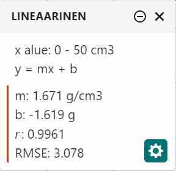

Sovitetun suoran kulmakerroin ja vakiotermi ovat lukuja, joilla on yksikkö ja fysikaalinen merkitys. Kun vertaat suoran yhtälöä tutkimuksen malliin, saat niistä tutkittavan suureen ja tietoa mittauksen onnistumisesta.
Yleinen taito: ohje sopii mille tahansa ohjelmalle tai laskimelle.
Tässä ohjeessa opit
- määrittämään sovitetun suoran kulmakertoimen ja vakiotermin yksikköineen
- tulkitsemaan kulmakertoimen ja vakiotermin fysikaalisen merkityksen mallin avulla
Mihin tarvitset tätä
Kulmakertoimesta saat tutkittavan suureen esimerkiksi tutkimuksissa Jousivakion määrittäminen ja Putoamiskiihtyvyyden määrittäminen heilurin avulla. Vakiotermi kertoo esimerkiksi tutkimuksessa Valaistusvoimakkuuden riippuvuus etäisyydestä, jäikö mittaukseen taustavaloa. Ennen tätä tarvitset mittauspisteisiin sovitetun suoran.
Työvaiheet
-
Valitse suoralta kaksi kaukana toisistaan olevaa pistettä. Lue pisteiden $(x_1, y_1)$ ja $(x_2, y_2)$ koordinaatit sovitetulta suoralta, ei mittauspisteistä. Valitse pisteet lähelle mittausalueen päitä: mitä kauempana ne ovat toisistaan, sitä vähemmän lukemisen epätarkkuus vaikuttaa tulokseen. Graphical Analysis Pro laskee kulmakertoimen sovituksesta puolestasi, mutta kahden pisteen laskulla tarkistat sen ja ymmärrät, mistä luku tulee.
-
Laske kulmakerroin. Kulmakerroin on
$$k = \frac{\Delta y}{\Delta x} = \frac{y_2 - y_1}{x_2 - x_1}$$
missä $\Delta y$ on pystyakselin suureen muutos ja $\Delta x$ vaaka-akselin suureen muutos pisteiden välillä. Tässä $\Delta$ tarkoittaa muutosta, ei epävarmuutta. Lue muutokset akselien asteikoilta suureiden arvoina, älä ruutuina tai senttimetreinä paperilla.
-
Lue kertoimet sovituksen tulosruudusta. Kun olet sovittanut suoran valinnoilla Käyrän sovitus ja Lineaarinen (Suoran sovittaminen mittauspisteisiin), tulosruudussa ovat kulmakerroin ja vakiotermi. Graphical Analysis kirjoittaa suoran muotoon y = mx + b: ohjelman m on kulmakerroin $k$ ja b vakiotermi $b$. Ohjelma käyttää desimaalipistettä. Kuvan esimerkkiarvoista m: 1.671 g/cm3 kirjoitetaan raporttiin $k = 1{,}671\,\text{g/cm}^3$. Kertoimet näkyvät yksiköineen, kun sarakkeille on annettu yksiköt; jos yksiköitä ei näy, asetus voi olla tulosruudun rattaan kuvakkeen takana (englanninkielisessä versiossa Show units in linear fit parameters). Tarkista silti itse, että kulmakertoimen yksikkö on pystyakselin yksikkö jaettuna vaaka-akselin yksiköllä.

Kuvakaappaus: Graphical Analysis (suomenkielinen käyttöliittymä); esimerkkiarvoja. -
Lue vakiotermi. Vakiotermi $b$ on suoran ja pystyakselin leikkauskohta eli pystyakselin suureen arvo, kun vaaka-akselin suure on nolla. Jos luet suoraa käsin ja vaaka-akseli ei ala nollasta, laske vakiotermi yhdestä suoran pisteestä: $b = y_1 - kx_1$.
-
Merkitse yksiköt. Kulmakertoimen yksikkö on pystyakselin yksikkö jaettuna vaaka-akselin yksiköllä. Jos pystyakselilla on $F\ (\text{N})$ ja vaaka-akselilla $x\ (\text{m})$, kulmakertoimen yksikkö on $\text{N/m}$. Kun pystyakselilla on $T^2\ (\text{s}^2)$ ja vaaka-akselilla $l\ (\text{m})$, yksikkö on $\text{s}^2/\text{m}$. Vakiotermin yksikkö on sama kuin pystyakselin suureen.
-
Vertaa suoran yhtälöä malliin. Kirjoita malli suoran yhtälön $y = kx + b$ muotoon ja katso, mikä mallin osa on kulmakertoimen paikalla.
- Jousivoiman laki $F = kx$: kulmakerroin on suoraan jousivakio.
- Heilurin malli $T^2 = \tfrac{4\pi^2}{g} \cdot l$: kulmakerroin on $k = \tfrac{4\pi^2}{g}$, joten putoamiskiihtyvyys on $g = \tfrac{4\pi^2}{k}$.
Esimerkiksi jos keksityn esimerkkiaineiston suoran kulmakerroin on $k = 4{,}05\,\text{s}^2/\text{m}$, putoamiskiihtyvyys on $g = 4\pi^2 : 4{,}05\,\text{s}^2/\text{m} \approx 9{,}75\,\text{m/s}^2$. Yksikkö tarkistaa laskun: $1 : (\text{s}^2/\text{m}) = \text{m/s}^2$.
-
Tulkitse vakiotermi. Mieti mallin avulla, mikä pystyakselin suureen arvon pitäisi olla, kun vaaka-akselin suure on nolla. Nollasta selvästi poikkeavalla vakiotermillä on yleensä jokin näistä syistä:
- Nollakohdan virhe eli systemaattinen siirtymä. Jos heilurin pituus mitataan kuulan yläpintaan eikä keskipisteeseen, jokainen pituus on säteen verran liian lyhyt. Suora siirtyy, ja vakiotermi on positiivinen, mutta kulmakerroin ei muutu.
- Epäjohdonmukainen mittaustapa. Tutkimuksessa Jousivakion määrittäminen suoraan tulee vakiotermi, jos jousen pituus ilman kuormaa mitataan ilman punnustelinettä mutta telineen massaa ei lasketa venyttävään voimaan.
- Todellinen fysikaalinen termi. Joskus mallissa kuuluu olla vakiotermi. Jousen värähdysajan neliö massan funktiona ei kulje tarkasti origon kautta, koska jousen oma massa värähtelee osittain mukana.
Jos vakiotermi on epävarmuuksien rajoissa nolla, mittaukset ovat sopusoinnussa origon kautta kulkevan mallin kanssa.
Tavallisimmat virheet
- Kulmakerroin on laskettu kahdesta mittauspisteestä. Tulos riippuu siitä, mitkä pisteet valitsit, ja sisältää niiden satunnaiset virheet. Käytä sovituksen kulmakerrointa tai lue pisteet sovitetulta suoralta.
- Valitut pisteet ovat lähellä toisiaan. Pieni lukemisvirhe muuttaa kulmakerrointa paljon. Valitse pisteet mittausalueen päistä.
- Kulmakertoimen yksikkö puuttuu tai on väärä. Huomaat sen, kun lopputuloksen yksikkö ei täsmää, esimerkiksi putoamiskiihtyvyydelle tulee yksiköksi $\text{s}^2/\text{m}$. Muodosta yksikkö akselien yksiköistä tai näytä yksiköt sovituksen tulosruudussa, ja kuljeta yksikkö laskun läpi.
- Kulmakerroin on sekoitettu tutkittavaan suureeseen. Heilurin kuvaajan kulmakerroin ei ole $g$ vaan $\tfrac{4\pi^2}{g}$. Vertaa aina suoran yhtälöä malliin.
- Vakiotermi on jätetty huomiotta. Selvästi nollasta poikkeava vakiotermi kertoo jotakin mittauksesta. Kerro raportissa, mistä se voi johtua.
Tarkista ennen kuin jatkat
- Kulmakerroin on luettu suoralta kaukana toisistaan olevista pisteistä tai saatu sovituksesta.
- Kulmakertoimella ja vakiotermillä on yksiköt.
- Tiedät mallin avulla, mitä kulmakerroin ja vakiotermi tarkoittavat.
Tarvitset tätä tutkimuksissa: Äänen nopeus kulkuajasta, Putoamiskiihtyvyyden määrittäminen heilurin avulla, Hiuksen paksuuden määrittäminen, Sähkömagneettisen induktion tutkiminen, Kuuman veden jäähtyminen, Jousivakion määrittäminen, Kaasun tilanyhtälön kokeellinen tutkiminen, Kondensaattorin kapasitanssin määrittäminen, Leikkiauton nopeus ja lähtökorkeus, Liukukitkakertoimen määrittäminen, Valonnopeuden määrittäminen mikroaaltouunilla, Pallon muotokertoimen määrittäminen, Muuntajan tutkiminen, Pariston kuormituskäyrä, Planckin vakio LEDien avulla, Pudotus- ja pomppukorkeus, Äänen resonanssi putkessa, Taitekertoimen määrittäminen, Uppokuumentimen hyötysuhteen määrittäminen, Valaistusvoimakkuuden riippuvuus etäisyydestä